A classroom quiz where nobody is ever out of it.
Super Mushroom Man is a projector-first team quiz for ESL classrooms. A correct answer never just pays a fixed score. It opens a block, and that block might be worth one point, might be worth seven, might double your total, or might hand every point you own to another team. That volatility is the whole reason it holds a class of ten-year-olds for twenty minutes.
Playable end to end · 130 tests · Pure seeded engine · Original art
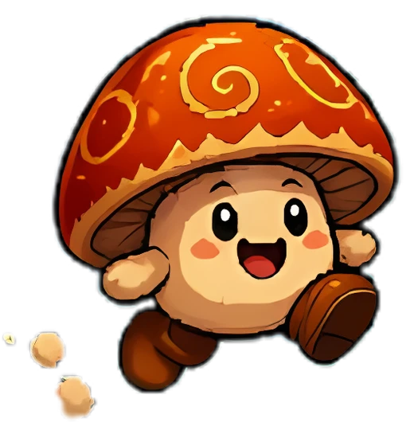
About
A teacher who builds the tools the room actually needs
I teach English in Seoul and I build classroom software in the evenings. Super Mushroom Man is one game in a set I am putting together under a single platform, and it exists because of a very specific classroom failure: a quiz where the scores only ever go up is over by the halfway point, and every team that fell behind stops trying.
The fix is not a better question bank. It is making the points unstable enough that last place is still winnable in the final round. That one design choice is what the whole engine is built around, and it is also what makes the game genuinely hard to write correctly, because "swap totals with the team in last place" has a surprising number of ways to go wrong in front of thirty children.
Everything on this page is something I designed, wrote, tested or commissioned myself: the engine, the reward system, the sound, the three sentence packs, and the layout that has to survive both a wall projector and a cramped laptop screen.
Case study
Rebuilding a staffroom classic that nobody owned
The format works. It has been played in language schools for over a decade. What it never had was an engine, a scoreboard, or art anyone was allowed to use.
Where it came from. A 54-slide fan-made PowerPoint that has been passed between ESL teachers for years. A grid of lettered blocks, each hyperlinked to a question, each question hyperlinked to a reward slide. It is a genuinely good classroom format, proven in real rooms, and it was held together entirely by hyperlinks.
What was wrong with it. Rewards were hand-wired per question, so changing the mix meant editing twenty-four links. Scores were kept on a whiteboard, which turned "swap points with another team" into the teacher doing mental arithmetic in front of the class. Adding your own questions meant editing the deck. And every image in it was lifted from a commercial video game, which rules it out of any paid product instantly.
What I kept. The loop, the volatility, the choice screens, and the reveal-then-judge rhythm. I read the deck's own hyperlinks to recover its real reward mix rather than guessing at one, and it turned out to be far more chaotic than I would have designed from scratch: fourteen coin payouts to ten mystery blocks. Ten years of classrooms had already tuned it, so I kept its numbers instead of mine.
How it is built. Next.js App Router with React 19 and Tailwind, TypeScript in strict mode, and one hard architectural rule: every scoring decision is a pure function. The engine holds no clock, no Math.random, no DOM and no network. Randomness enters through a seeded generator whose state lives inside the game state, so any game is reproducible from its seed and every rule is testable without rendering anything.
What runs in the room. Nothing about a game in progress is written to a database. State lives in memory, mirrored to session storage so a mid-lesson reload does not lose the game. No student data leaves the room, there is nothing to clean up, and a lesson that ends abruptly leaves nothing behind.
Rewards hand-wired into twenty-four hyperlinks.
Rewards shuffled from a seeded bag at game start. Zero teacher prep.
Reward slides duplicated, because a slide's animation only plays once.
Not a problem the web has.
Scores kept on a whiteboard, by hand, mid-lesson.
A live scoreboard. The engine applies every outcome, including the awkward ones.
Your own questions meant editing the deck.
Pick a built-in pack and a level, or import a saved list.
Borrowed commercial game artwork on every slide.
Original characters, made for this game and owned outright.
See it in action
One screen, no student devices, readable from the back row
The teacher runs the whole game from a laptop, often without a mouse. Students never log in and never hold a phone. Everything a class sees is sized from a single screen unit, so the same layout fits a wall projector and a cramped laptop display.
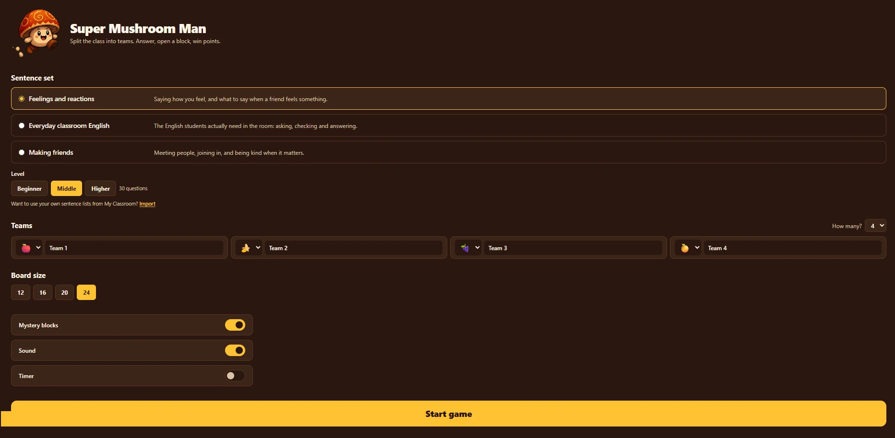
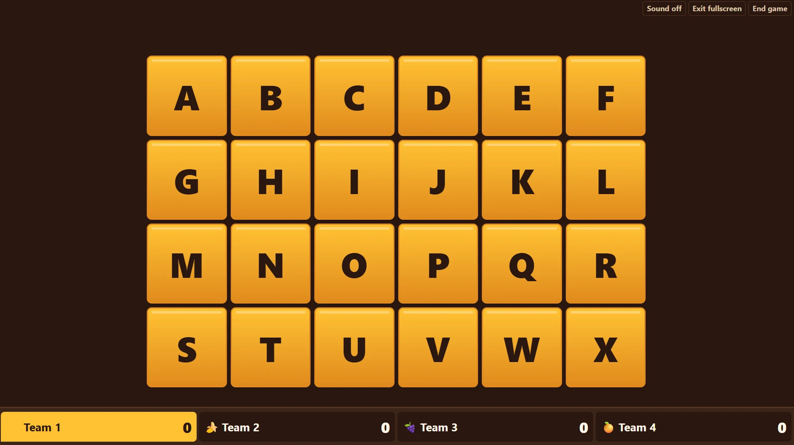
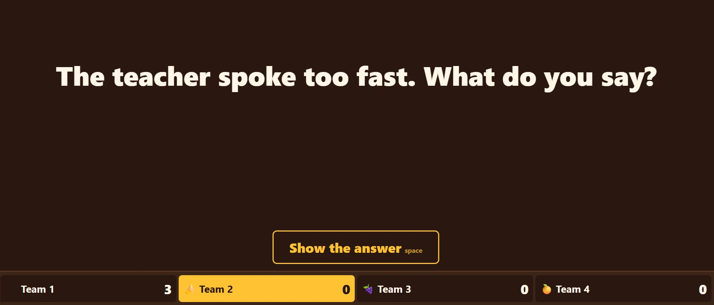
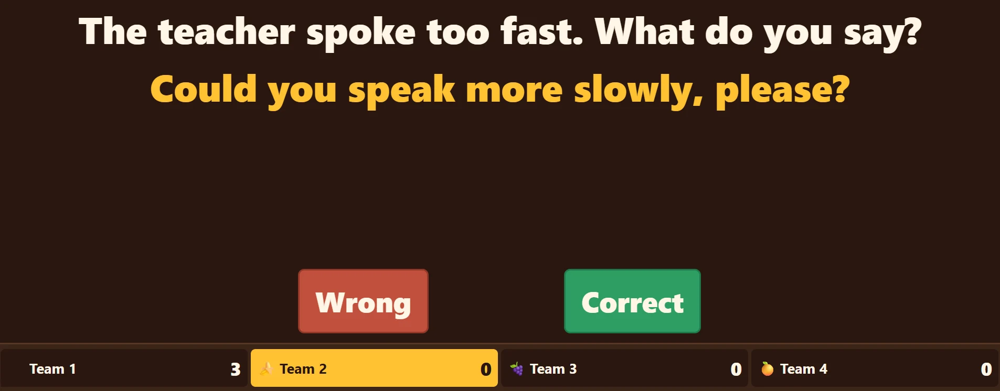
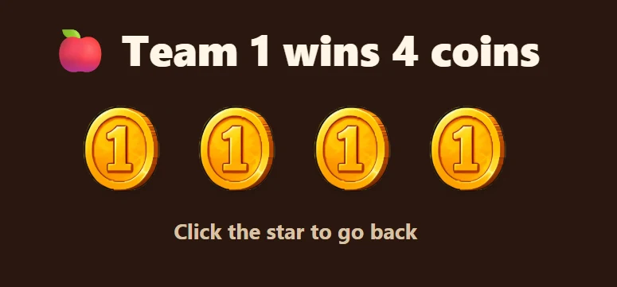
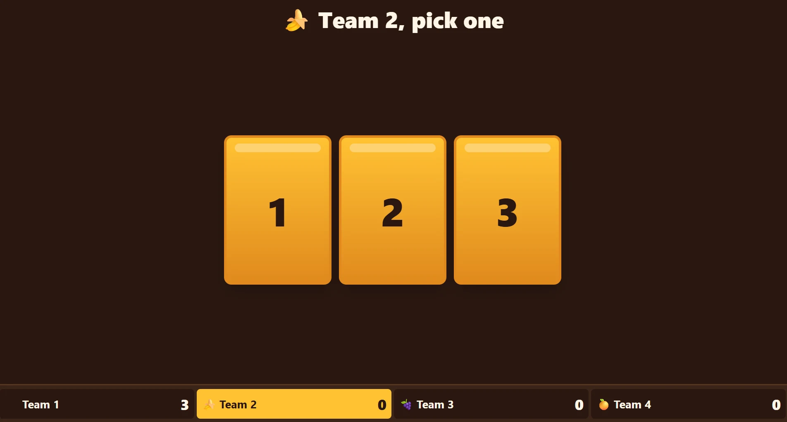
The reward table
Seven ways a turn can end
These are the outcomes hiding behind a mystery block, with the weights the original deck used. Giving all your points away came up twice as often as doubling them, and that asymmetry is a lot of why the game feels dangerous. Good news arrives in gold, bad news in red, so the back of a room knows which it is before reading a word.
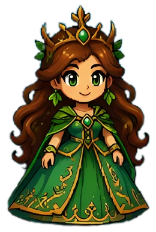
The acting team's total is multiplied by two. On zero it stays zero, and the screen says so rather than silently doing nothing.
A flat six points to the acting team. No target, no arithmetic, no argument.
The largest single payout in the game, and roughly twice what a good coin block pays.
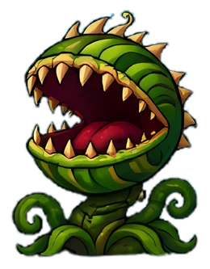
The acting team drops to zero and a team of their choosing takes the lot. At zero points it still shows the screen and the team picker, because giving away nothing is funny and the class enjoys it.
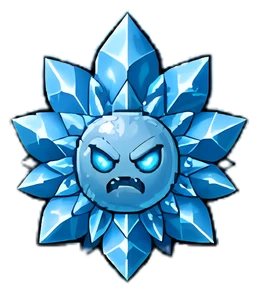
Totals exchanged with a team of the acting team's choosing. The most disruptive thing that can happen to a comfortable lead.
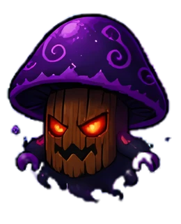
One point from each other team, straight to the acting team. Teams already on zero lose nothing and give nothing, because points never go below zero.
No target picker and no choice. If the acting team is already level with the lowest score it is last place, tie or not, and the screen says nothing changes.
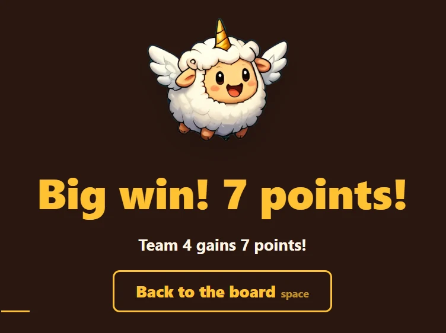
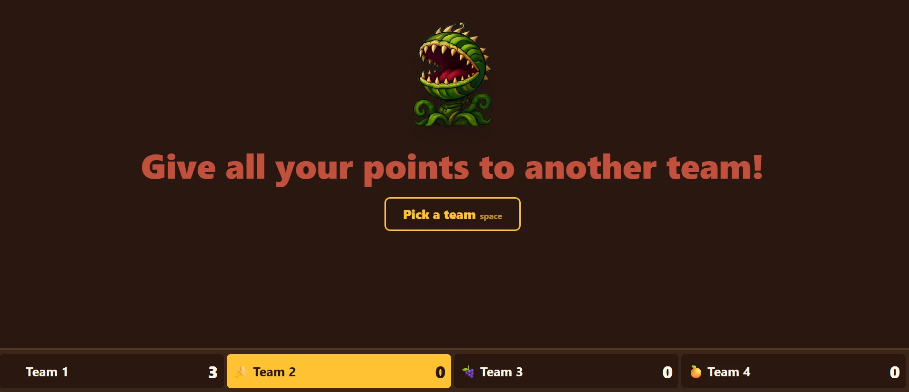
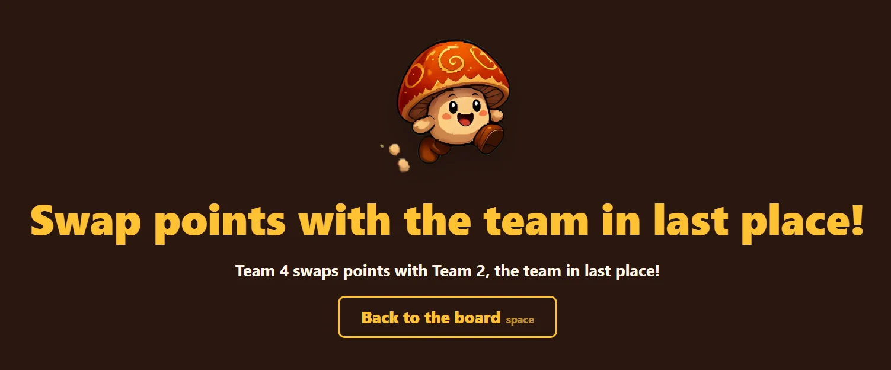
Engineering
Four decisions that took the longest to get right
None of these are visible on screen. All four are the difference between a game that survives a real lesson and one that produces a bug nobody can reproduce.
Rewards are dealt from a bag, not pinned to blocks
The obvious design puts a reward on each block at game start. It cannot work. Two fairness rules keep the game from turning cruel: never deal a mystery block as the very first reward of the game, before scores mean anything, and never deal two mystery blocks in a row. Both are rules about the order rewards are dealt.
But the teacher chooses the order blocks are opened, and a wrong answer pays nothing at all. Board order is not deal order and never will be. So rewards live in a bag, shuffled and arranged once at game start, and are dealt when a team answers correctly. The guards then hold for the whole game, whatever order the class picks.
The engine has no clock and no randomness
Every scoring decision is a pure function in one file. No React, no Date.now(), no Math.random(), no DOM, no network. The reducer is a single signature, and randomness enters only through a seeded generator whose state is carried in the game state itself.
// The whole surface of the scoring layer. applyOutcome(state: GameState, action: GameAction): GameState
That is why the answer timer lives in a component and not in the engine. It is also why the chaos outcomes are testable at all: a game is reproducible from its seed, so "swap with last place when three teams are tied for last" is a unit test rather than a report from a teacher who cannot quite remember what happened.
One screen unit, because width alone was wrong
The first layout sized everything from viewport width. It fitted a wall-mounted TV perfectly and overflowed a laptop, because the browser takes a strip for tabs and Windows takes another for the taskbar, and a short wide window has far less height than its width implies.
/* One unit of screen scale. Never a bare vw again. */ --u: min(1vw, 1.9vh);
Every class-facing size on every screen is a multiple of that unit. On a projector it behaves like 1vw. On a cramped monitor it follows the height instead. One rule, and the fit problem stopped coming back.
The writing rules are enforced by the test suite
Many teachers using this are not native English speakers, and the students are between seven and sixteen. So the content rules are real constraints rather than style notes: short plain sentences, common words, nothing scary or violent, and no typographic dashes that a projector renders as a smear.
Those rules are a test file. It fails the build on an em dash, on a word from the scary list, on a prompt over 110 characters, on a duplicate prompt, on an empty answer, on a level with no open-ended question, and on a level whose prompts do not measurably lengthen as difficulty rises. Writing rules that live only in a document are writing rules that decay.
The edge case that shaped the table. An early draft had "swap with last place" pick the first tied team and name it. That let a team on three points swap with another team on three points and read "Team 1 and Team 2 swap points" while the scoreboard did not move. From ten metres away that looks exactly like a bug. The rule now is that being level with the lowest score means you are last, and the screen says so.
Where the numbers came from. An earlier version of my own spec guessed the reward mix at seventeen coin payouts to seven mystery blocks. Reading the source deck's actual hyperlinks put it at fourteen to ten. My guess was calmer, safer, and worse. The deck that had survived a decade of real classrooms was the one with better judgement.
Status
Where the build actually is
The game is complete and plays from start to finish with no account, no server and no network. What is left is the integration with the wider platform it belongs to, and that is waiting on the platform rather than on this code.
The source repository is private, because this is one game inside a commercial subscription product. Access for review is available on request, and every screenshot above is from the working build.
Contact
Get in touch
I am a teacher and developer in Seoul building classroom software that works on the equipment schools actually have. If you would like to talk about this project, edtech, or working together: